Настройка OpenVPN сервера и клиента на Mikrotik
Бывают случаи, когда необходимо настроить удалённый доступ на mikrotik или даже на несколько.
Особенно это актуально, если вы обслуживаете несколько объектов и нет возможности физически постоянно присутствовать возле оборудования.
В этом статье мы разберём, как настроить OpenVPN сервер на mikrotik, а также клиенты на mikrotik и компьютере под управлением Windows.
Для работы нам понадобится Белый IP адрес (он и будет адресом сервера в наших настройках) для доступа к серверу из интернета и сертификаты безопасности.
Краткий план данной статьи:
Создание сертификатов и ключей OpenVPN
1) Скачаем программу OpenVPN с официального сайта.
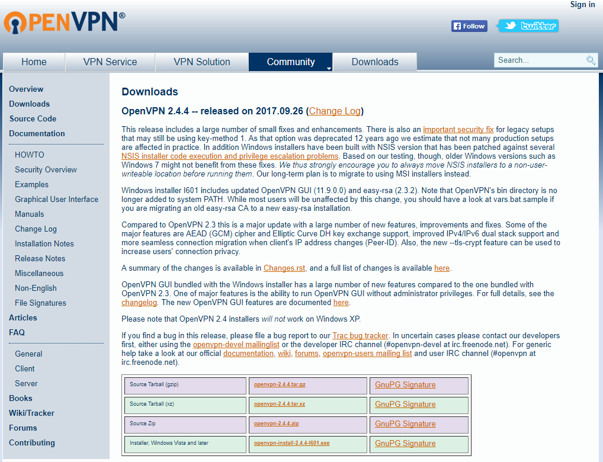
2) Устанавливаем, выбрав все галочки.
EasyRSA Certificate Management Scripts нам обязательно понадобится для генерации ключей и сертификатов.
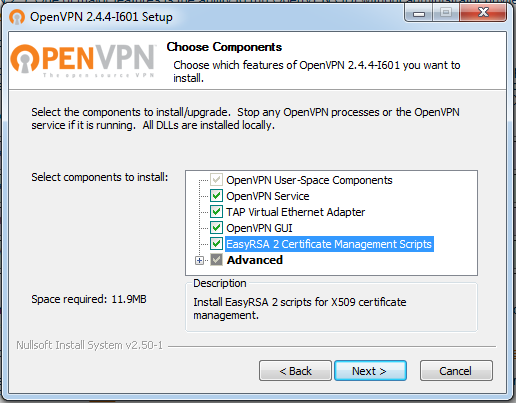
3) Указываем путь. В дальнейшем он нам понадобится. В нашем случае используем стандартный C:\Program Files\OpenVPN
4) После установки заходим в C:\Program files\OpenVPN\easy-rsa
Открываем vars.bat (если его нет, то vars.bat.sample) блокнотом или NotePad++ и редактируем его.
set KEY_COUNTRY=RU
set KEY_PROVINCE=MoscowRegion
set KEY_CITY=MOSCOW
set KEY_ORG=OpenVPN
set KEY_EMAIL=mail@mail.com
set KEY_CN=server
set KEY_NAME=server
set KEY_OU=OU
set PKCS11_MODULE_PATH=changeme
set PKCS11_PIN=1234
В строках set KEY_CN и set KEY_NAME указываем server
Последние 2 строки — параметры по умолчанию. Остальное можете редактировать под себя.
Сохраняем файл как vars.bat на рабочий стол, а затем копируем в папку C:\Program files\OpenVPN\easy-rsa
Чаще всего сохранить напрямую в исходную папку не получится — не хватает прав.
5) Отредактируем файл openssl-1.0.0.cnf
Так же открываем с помощью блокнота или notepad++
Нас интересует строка:
default_days = 3650 # how long to certify for
Она отвечает за время жизни сертификата. Если значение отличается — то указываем 3650 (10 лет).
Сохраняем.
6) Запускаем командную строку от имени администратора:
Пуск — Все программы — Стандартные
Правой кнопкой мыши на «Командная строка» и в меню — Запустить от имени администратора.
Командную строку не закрываем до конца процесса генерации сертификатов.
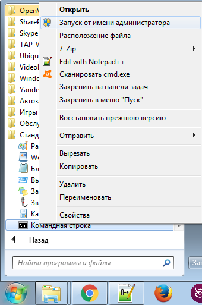
7) Поочередно выполняем следующие три команды:
cd C:\Program files\OpenVPN\easy-rsa
vars
clean-all
В итоге мы должны увидеть сообщение «Скопировано файлов: 1» дважды.
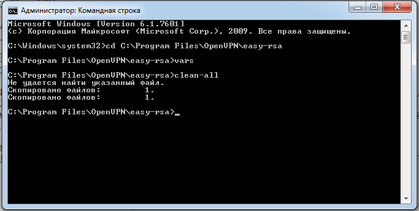
В папке C:\Program files\OpenVPN\easy-rsa появится папка keys с двумя файлами index.txt и serial.
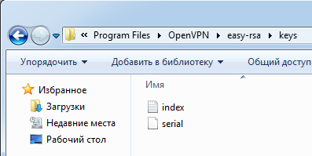
8) Генерируем ключ Диффи Хельмана — команда build-dh
Генерация займёт некоторое время. Дождитесь окончания.
9) Генерируем ключ центра сертификации (CA) — build-ca.
Нажимаем Enter, пока не закончатся вопросы.
Вы увидите в командной строке путь C:\Program files\OpenVPN\easy-rsa
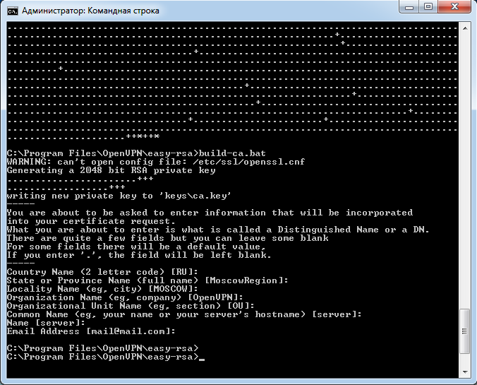
Нет смысла менять заданные значения. Вы ранее прописали эти параметры в файле vars.bat
10) Генерируем сертификат сервера — команда build-key-server server
Нажимаем Enter (оставляем параметры по умолчанию, прописанные в vars.bat), пока не дойдём до вопросов.
Sign the certificate? (Создание сертификата на 3650 дней)
1 out of 1 certificate requests certified, commit? (Запись сертификата в базу)
На вопросы отвечаем нажатием Y
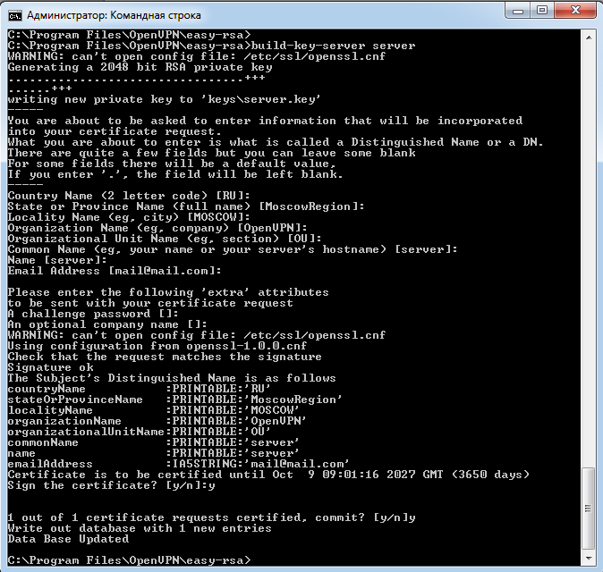
11) Генерируем сертификат клиента build-key client
Нажимаем Enter (оставляем параметры по умолчанию, прописанные в vars.bat), пока не дойдём до вопросов Common Name и Name.
На эти вопросы отвечаем client — это название создаваемого сертификата.
На вопросы Sign the certificate? и 1 out of 1 certificate requests certified, commit? отвечаем нажатием Y
12) Генерация сертификатов окончена.
В папке C:\Program files\OpenVPN\easy-rsa\keys можно увидеть следующие файлы:
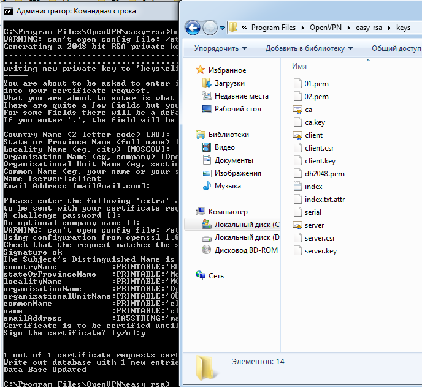
Сертификаты для сервера и клиентов готовы.
Настройка OpenVPN сервера на Mikrotik
Подключимся к Mikrotik с помощью программы Winbox.
Загрузим 3 файла: ca.crt, server.crt, server.key
Для этого в меню нажмём Files и перетащим их из папки C:\Program files\OpenVPN\easy-rsa\keys
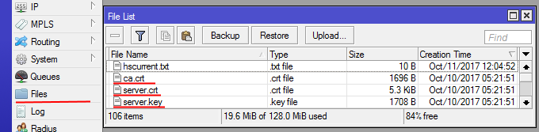
13) Далее необходимо их импортировать.
Откроем System – Certificates — Import и поочерёдно выберем сертификаты в этом порядке:
ca.crt
server.crt
server.key
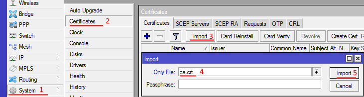
После импорта появятся две записи:
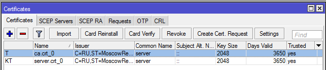
14) Создадим пул адресов для VPN клиентов:
IP — Pool — add (+)
Введём название openvpn-pool
Диапазон 172.30.0.2-172.30.0.253
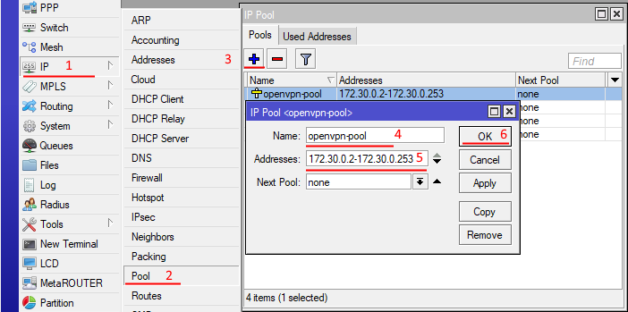
15) Создадим PPP профиль.
PPP — Profiles — add (+)
Введём название openvpn
Локальный адрес 172.30.0.1
Созданный Пул openvpn-pool
Остальные настройки оставляем по умолчанию.
Нажимаем ОК.
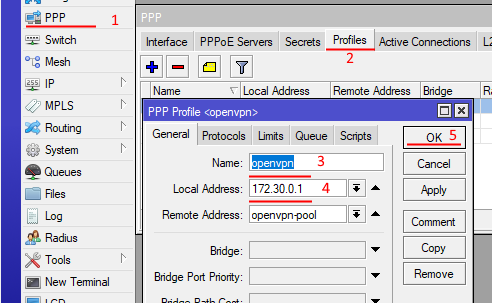
16) Создадим непосредственно сам OpenVPN сервер
PPP — Interface — OVPN Server
Включаем Enable
Указываем порт 1194
Выбираем наш профиль openvpn
Поставим галочку Require Client Certificate
Выберем наш сертификат server.crt
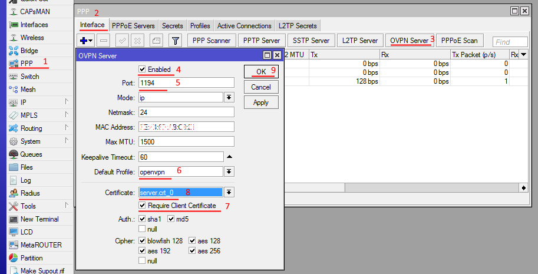
17) Создадим пользователя для подключения.
PPP — Secrets — add (+)
Введём имя пользователя и пароль ovpn_user1
Выбираем Сервис ovpn и профиль openvpn
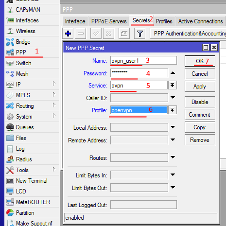
Создадим 2 пользователя:
ovpn_user1 для клиента на компьютере
ovpn_mikrotik1 для клиента на Mikrotik
Рекомендуется для каждого VPN клиента создавать отдельное уникальное имя пользователя.
В дальнейшем это упростит работу и позволит отслеживать всех подключенных VPN клиентов.
18) Настроим фаервол
IP — Firewall — add(+)
Во вкладке General указываем:
Chain — input
Protocol — tcp
Порт 1194
Интерфейс — ether1 (Если интернет идёт через него)
Вкладка Action:
Action — accept
Затем ОК
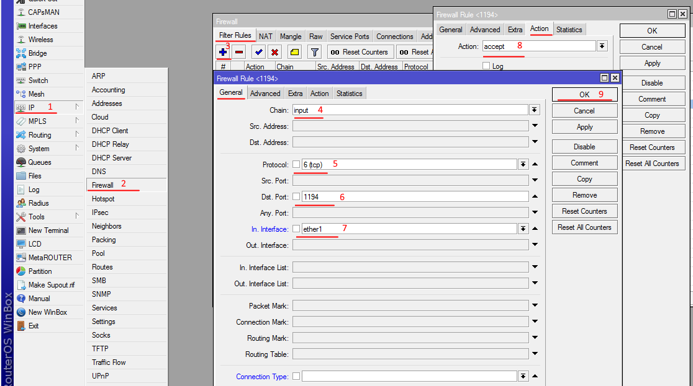
Сервер настроен, теперь приступим к настройке VPN клиентов.
Настройка VPN клиента на компьютере под управлением Windows
19) Копируем в папку C:\Program files\OpenVPN\config\
из C:\Program files\OpenVPN\easy-rsa\keys следующие файлы
ca.crt, client.crt, client.key.
из C:\Program files\OpenVPN\simple-config\
client.ovpn
Создадим текстовый файл pass, где укажем логин и пароль от созданного VPN клиента на сервере.
В нашем случае это ovpn_user1
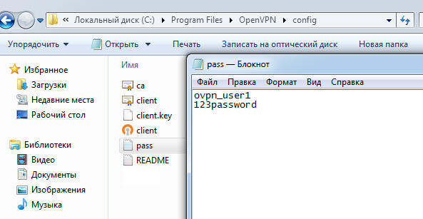
20) Откроем файл client.ovpn с помощью блокнота или notepad++
Изменяем следующие строки:
#Протокол
proto tcp
#Адрес и порт сервера
remote ваш.ip.адрес.сервера 1194
#Проверяем правильность названия ключей
ca ca.crt
cert client.crt
key client.key
И в самом конце добавим строчку
auth-user-pass «C:\\Program files\\OpenVPN\\config\\pass.txt»
В итоге у нас получатся следующие настройки в этом файле:
client
dev tun
proto tcp
remote адрес_сервера 1194
resolv-retry infinite
nobind
persist-key
persist-tun
ca ca.crt
cert user.crt
key user.key
remote-cert-tls server
cipher AES-128-CBC
verb 3
auth-user-pass «c:\\Program Files\\OpenVPN\\config\\pass.txt»
Остальные настройки закоментированы решеткой «#» или точкой с запятой «;»
21) Сохраняем файл. Если сохранить в папку не получается — сохраняем на рабочий стол, а затем копируем с заменой.
Запускаем OpenVPN и подключаемся.
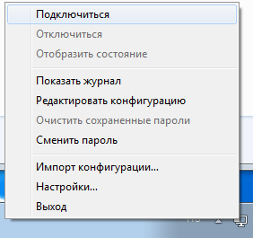
После подключения можем увидеть, что нам назначен IP из диапазона, который ранее указали на сервере.
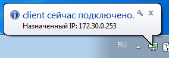
Настройка VPN клиента на Mikrotik
Имея настроенный OpenVPN сервер, можно настроить доступ на Mikrotik даже там, где нет белого IP адреса.
22) Подключимся к Mikrotik с помощью программы Winbox.
Загрузим 2 файла: client.crt, client.key
Для этого в меню нажмём Files и перетащим их из папки C:\Program files\OpenVPN\easy-rsa\keys
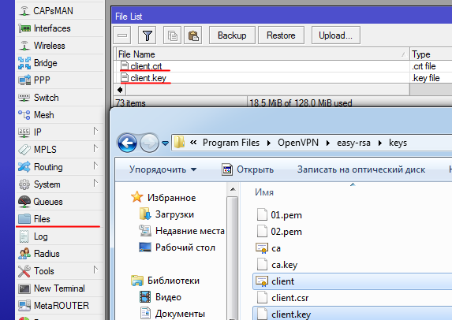
23) Далее необходимо их импортировать.
Откроем System – Certificates — Import и поочерёдно выберем сертификаты в этом порядке:
client.crt
client.key
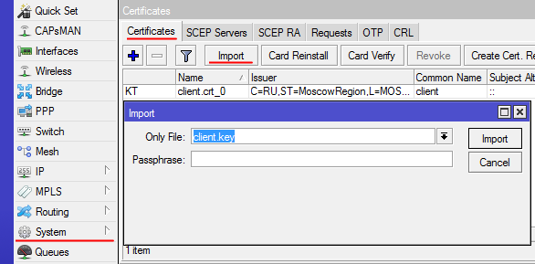
24) Настроим параметры сервера:
PPP — add(+) — OVPN client
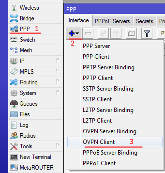
Во вкладке General указываем имя
Name — openVPN1 (любое, на ваше усмотрение)
Вкладка Dial Out:
Connect To — Адрес сервера(Внешний IP адрес главного hjenthf Mikrotik)
Port 1194
Указываем пользователя и пароль, который мы создали на VPN сервере
В нашем случае это пользователь ovpn_mikrotik1
Сертификат Client.crt
Нажимаем ОК
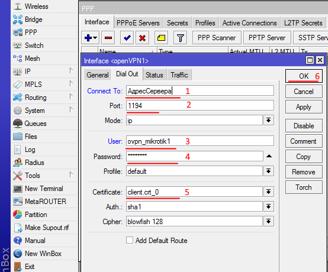
25) В терминале набираем /interface ovpn-client monitor openVPN1
Должно появиться сообщение со статусом connected
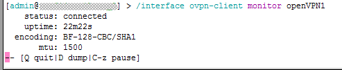
Теперь к этому mikrotik можно подключиться через VPN по адресу, который он получил от VPN сервера
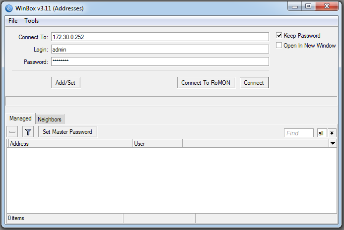
Посмотреть адрес можно:
В Mikrotik-клиенте в IP-Adresses строка с нашим интерфейсом openVPN1
В Mikrotik-сервере PPP-Active Connections
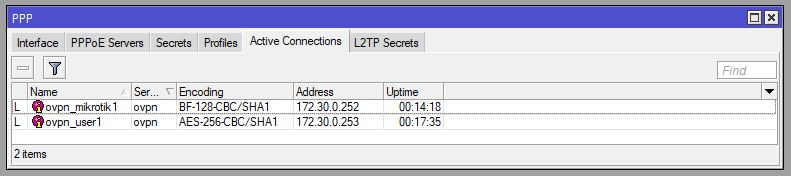
{kind=link}